These materials (minimum) are required to perform preventive maintenance:
PM Kit
Proper lubricants
Grease, No. 2 Lithium
Oil, 3-IN-ONE®
Autogloss
Miscellaneous supplies
Alcohol pads for cleaning the substrate probe and removing other tough deposits
DI water
Gauze or paper towels for general cleaning
KimWipes® for general cleaning
Lint-free applicators and swabs for general cleaning
Scotch-brite® pad for cleaning rough or rusted surfaces
Ensure car stock includes one each:
Sample probe
Substrate probe
The goal of this procedure is to increase instrument reliability by:
Decreasing the amount of intervention time.
Increasing the mean time between service visits (MTBSV).
Reducing the number of unexpected service calls.
Table 43: Time intervals and estimated times to complete PM
Note: PMC is the same as PM.
Instrument
Time Interval
Hours to complete PM
DxI 600
30,000 tests or 6 months
7 to 12
DxI 800
60,000 tests or 6 months
8 to 14
Note: In an effort to prolong sample pump, precision pump, and piston-seal lifespan and reduce future unscheduled repair visits, it is recommended to disassemble, clean, and reassemble the sample pump and precision pumps once a year either during a PM or in a separate proactive repair WO. This will require performing pipettor matching, low-volume matching, and system check which can add 3-4 hours to the PM. Refer to
Fluidics: Cleaning Pump(Precision/Sample/Wash) procedure.
Note: There are PM kits available for both the DxI 600 & DxI 800 that do not contain Aspirate Probes. The recommendation is to alternate between PM kits with and without aspirate probes for any system where maintenance, rotation, and verification of probes is clearly followed. Aspirate probe performance is verified by running system check.
Note: Test counts are recorded at every PM in the PM Checklist which is scanned and attached to the service report. Test counts are also recorded by the customer on their Daily Maintenance Log Sheet.
Note: The DxI PM procedure may be completed over the course of more than one day.
Verification shall be performed each day according to what PM activities were completed during that day [see Verification Table below or refer to the
Admin: Verification of Service Repair document].
Minimum required verification for each day of the PM is a passing System Check.
All verification listed in the PM procedure shall be completed during the course of the PM.
Carryover (only if Reagent or Sample Probe alignments are changed)
Final Checks & Verification
Ensure all required PM verification has been completed including HS System Check.
Warning: When servicing equipment, you must recognize the potential for exposure to blood-borne pathogens and apply all Beckman Coulter safety precautions. Use personal protective equipment, and correctly dispose of used parts.
Warning: The photomultiplier tube (PMT) is a very sensitive photon measuring device. Any background or extraneous light coming into contact with a powered PMT can saturate the PMT and reduce the gain. This reduces the performance of the PMT, and it can take a long time for the PMT to recover or it might never recover fully. A magnetic field close to a powered PMT also reduces the performance of the PMT. The magnetic field causes the electrons to follow a curved path instead of moving in a straight line. When you are performing service in the area of the luminometer, observe the following rules.
Never shine a flashlight around the luminometer while the PMT is powered on.
Never bring a strong magnetic field close to the luminometer while the luminometer is powered on.
Before removing the covers on the analytical module, turn off the power to the PMT.
Cap the PMT whenever it is removed from the analytical module.
Prepare the instrument for maintenance.
Review the Event Log for frequent or unusual events.
If PROService is available, use PROService to review the system event log and QC remotely before the PM.
For instruments with software V4.4 and above, view the diagnostic event logs by selecting
Filter and then selecting
Diagnostic.
Review the QC and system check history and note any potential issues to address during the PM.
Note: If the substrate mean is greater than 8700 RLUs, then troubleshooting the substrate system. Refer to the
Fluidics: Troubleshoot Substrate System procedure.
Note: Proactively addressing substrate levels that reach 8700 RLUs helps prevent substrate levels from rising above 9000 RLUs during customer operation between PMs.
Review the analog data screen temperatures, voltages, and duty cycles. Verify that the associated temperatures or voltages for each device are within range.
Zone
Temperature Range °C
Substrate
36.9 to 37.9
Wash Read Ring
36.8 to 37.2
Sample Wheel
4 to 10
Reagent Peltier 1 to 3
2 to 10
Reagent Storage
4 to 10
Note: Duty cycles that are approaching 1.00 or 100% indicate a possible hardware problem and needs to be investigated.
Review the operator log and maintenance log with the operator and note any issues to address during the PM.
Note: Stress the importance of and compliance with daily and weekly maintenance, including 5,000 and 10,000 test count maintenance, if necessary.
Make sure that all applicable, active mods are to be completed or are scheduled.
Note any environmental issues to address with the customer, including instrument clearances or the temperature of the lab.
Note: Refer to the Thermal Operating Requirements for Access Platform Systems document (B04823A) in the Access Systems Applications database for information on lab temperature requirements.
Inspect the PC fan inlet and outlet for blocked or inhibited air flow and for fan operation. Clean, if needed.
Note: The fan inlet on the beige DTx PCs is located behind the faceplate of the PC. Remove the faceplate to inspect or clean the inlet.
Verify that
Auto Delete is set up. From the
Main Menu, select
Configure
> PC Admin > Auto-Delete Setup.
Note: Because Auto Delete deletes data permanently, check with the customer before configuring Auto Delete. Common settings for Auto Delete are 7 to 30 days for patients, 60 to 90 days for QCs, and 30 days after expiration for reagent packs.
Perform manual or automated maintenance on the database.
Note: The automated procedure performs a database update at the end of the process which can take > 2 hours to complete (depending on database size) and must finish before the user interface will launch. The manual database maintenance process does not do the database update.
Manual Database Maintenance - Complete the following procedures.
Reboot the console PC.
Note: When rebooting the Privacy & Security compliant Windows 8 or Windows 10 PC, you must enter security password "Access2Admin" when prompted to launch Windows.
Select
Configure >
PC Admin >
Database Maintenance
Enter the password
Access2Support
Select
OK >
OK
Perform top section maintenance.
Open the two main upper covers.
Confirm that the system is power is powered off by moving a reagent pipettor.
Bypass the interlock switches on the two main upper covers using the red bypass tool.
Verify that all cooling fans are operating. Replace as needed.
Five cooling fans on the bottom of the upper right card cage
Two cooling fans on the rear of the upper left card cage
One main blower fan
Note: A mirror may be necessary to view the fans on the upper right card cage.
Unscrew and remove all dispense and aspirate probes from the dispense probe plate. Place the probes in a container or on absorbent material to avoid getting buffer in the analytical module.
Caution: Do not remove the probe couplings from the probe connection plate.
Remove and clean the two wash pump valve parts. When clean, reinstall the valve parts in the correct orientation.
Caution: If you are removing the probe couplings from the probe tubing ports or fitting connections for cleaning or replacing, place absorbent material under the probe tubing ports or connection fittings to avoid getting wash buffer or liquid waste in the analytical module.
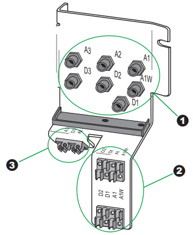
1
Aspirate and dispense probe tubing ports or fitting connections (7x)
2
Front manifold plate with aspirate and dispense probe tube routing clamps (secures 4 lines of tubing)
3
Rear manifold plate with aspirate and dispense probe tubing clamps (secures 3 lines of tubing).
Caution: Carefully check the orientation of the rotor and stator before removal.
Replace the peri-pump tubing and in-line fittings.
Caution: Wipe off any debris from the peristaltic pump rollers and cartridges. Ensure the pump rollers are not seized and the cartridges are put back correctly.
The Aspirate Pump does not require the cassettes to be in any specific order.
Figure 46: Particle Wash Aspirate Pump
Inspect the fluid outlet manifold and fittings on the aspirate probe peri-pump for obstruction. Clean as needed.
Replace or reinstall the aspirate probes. Connect the probe couplings to the probe connection plate. Do not install the probes into the dispense probe plate at this time.
Note:
If installing new probes, clean them before installation. Use the aspirate probe brushes to clean the inside of the replacement aspirate probes per cleaning procedure.
If not installing new probes, then inspect, clean and reinstall the current system probes, or swap them with a cleaned spare set from customer inventory.
The customer must order subsequent sets if spares are needed due to damage or wear.
Complete the aspiration flow test, ensuring that each probe aspirates evenly with a minimum rate of 3.6 mL per 30 seconds.
Remove power from the luminometer by moving the switch on the Power Distribution PCB labeled "All DC power (except CPU and reagent coolers)" to the off position and by removing the power cable from the luminometer.
Remove the analytical module cover.
Replace the duck-bill valve, and ensure the customer is replacing the duck-bill valve at the correctly scheduled intervals.
Leave any extra duck-bill valves with the customer.
Remove the substrate probe from the probe plate.
Clean inside the analytical module.
If there is evidence of spills or dusting, remove and clean the wash carousel, clean inside the module, and clean the luminometer lens and mounting area.
If there is excessive RV dusting, confirm the analytical module adjustments and alignments including the incubator pick-and-place and wash pick-and-place.
If excessive red idler bearing dust was found in the carousel, replace the red idler bearings and correct the issues that are causing wear. Contact Tech Support for assistance with adjustments, alignments, or other corrections necessary to address the dust.
Inspect the ejector plate guide shaft, rods, and screws and tighten if loose.
The ejector plate guide shaft screws are located on the bottom side of the ejector plate, directly below the two guide shafts.
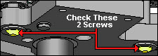
Inspect the mixer belt and pulleys (including the idler pulley) for any signs of fraying or dust. If necessary, lubricate the idler pulley shaft.
Inspect the gripper/spinner/ejector assemblies for deposits and damage.
Lift the eject rod by the retainer ring and ensure that it drops freely. If the eject rod does not drop freely, then clean the upper reject rod with DI water. If the eject rod still does not drop freely, consider replacing the eject rod.
Use a mirror or remove the part to inspect the eject rod and collet fingers.
Clean or replace, as needed.
Note: Sticky eject rods or assemblies can cause an HS System Check failure.
Inspect and tighten the eject plate bearing housing attachment screws.
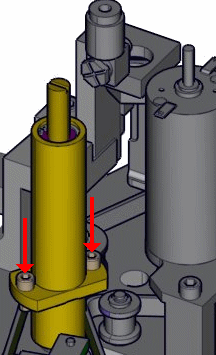
Inspect the analytical module insulation. If the foam is not secure, then ensure the Velcro straps are taut. Replace any fasteners that are loose.
Clean the exterior of the substrate probe with an alcohol pad, and then reinstall the probe into the dispense probe plate.
Reinstall the dispense and aspirate probes into the dispense probe plate.
Verify that there is free vertical movement of all aspirate probe springs with the probe plates separated or together.
Perform middle section inspection and lubrication.
Warning: The dual-gantry spline shafts are black and made of Teflon. These shafts do not require additional lubrication.
Note: Refer to the
PM: Lubrication procedure for specific instructions for each component.
Clean and lubricate the vessel orienter on the bulk feeder.
Clean and lubricate the ejector plate guide rod.
Use a mirror to inspect the pick-and-place piston and collets for deposits or damage. Remove any black material on the piston.
Note: Possible causes of the black material include: High or low pick-and-place z-alignment, loose belt tension on the pick-and-place z-axis belt, or the secondary pressure regulator is not at 20 psi.
Perform the correct lubrication procedure for the instrument being serviced. Inspect the full range of motion, cable routing, and overall integrity for each module.
Note: Refer to the
PM: Lubrication procedure for specific details on lubrication.
If servicing a DxI 600 or 800, inspect and lubricate
Pick-and-place
Carriage
Pipettor
If servicing an integrated platform, inspect and lubricate
Dual-gantry sample pipettor (with pick-and-place)
Pick-and-place (all other)
Carriage (all)
Pipettor (all except sample pipettor)
Perform maintenance on the substrate loader, reagent pipettors, and bulk feeder.
Clean the substrate loader doors and drawers. Lubricate all metal sliding components with 3-IN-ONE® Oil.
Ensure free movement of the tubing and any moving components. Replace any damaged parts, kinked tubing, or missing check valves.
Note: Verify that they form a seal around the substrate bottle when the assembly is lowered. Substrate that is not sealed from atmosphere deteriorates more quickly.
Remove, clean, and reinstall the reagent wash tower nozzles and replace the o-rings.
Note:
Inspect the ports for any debris. Debris can cause insufficient washing.
It may be necessary to backflush the wash tower nozzles to remove debris.
Restore power by moving the switch on the Power Distribution PCB labeled "All DC power (except CPU and reagent coolers)" to the on position.
Inspect the bulk vessel feeder area, remove any dropped vessels, and align and repair if necessary.
Replace the sample probe wash tower nozzle and o-rings.
Inspect and clean the sample probe.
Note: If the sample probe is bent or damaged, replace it.
Initialize the system.
Verify that the transducer temperatures are within specification (37 °C ±2 °C) and adjust as needed.
Drain the pipettors in preparation for ultrasonics adjustments.
Caution: To prevent the ultrasonics adjustment from failing or causing erroneous calibrations, remove the liquid from the pipettor probe and tubing before checking or adjusting the ultrasonics.
Select
Diagnostics
> Device Diagnostics > Digital Devices > Peristaltic and Vacuum Pumps.
Select the
Vacuum On option for the reagent probe wash towers.
Disconnect the quick-disconnect fitting at the fluid reservoir to drain the buffer supply line. Using an empty syringe or canned air, push the air through the buffer supply line.
Clear the
Vacuum On option for the reagent probe wash towers.
Reconnect the quick-disconnect fitting at the fluid reservoir.
Connect an approved, calibrated multimeter to the pins for the pipettor being adjusted. Set the multimeter to read V AC using the first of the four pins as a test point.
Select the correct drained pipettor being serviced, and then select
Sonication Power High.
Note:
If the screen says
High, then reselect
High to confirm that the correct setting is selected.
Confirm that the
Duty Cycle is 100%, and the
Hold Radio option is selected.
Select the
Sonicator On option and immediately observe and record the AC voltage from the multimeter. Clear the
Sonicator On option within five seconds.
Caution: To prevent damage to the ultrasonic components, do not leave the sonicator on for more than five seconds at a time.
Determine the next step using the following table.
If the voltage is
then
187 to 207 V AC and stable
Note: Normal voltage readings decay approximately 4 to 7 V and then stabilize. The reading increases slowly as the transducer heats up. Unsteady voltages continue to decay.
Select
Done.
Remove the multimeter leads from the ultrasonics PCB.
Continue with the Adjusting Ultrasonics Transducer Voltage step.
Not 187 to 207 V AC but
is stable
Verify the Sonicator Power is set to
High and repeat voltage check
Select
Done.
Select
Ultrasonics> Ultrasonics Adjustment
Select the correct pipettor being serviced.
Adjust the Voltage value on the screen as necessary to obtain a target output value of 197 ± 5 V AC when measured on the PCB
Select
Adjustment
to save the new voltage value.
Note: If the Adjustment button is not selected or if the Adjustment doesn't pass, the new voltage value will not be saved.
Return to the
Ultrasonic Settings
screen and repeat the voltage check at the PCB.
Repeat these steps until the measured voltage at the PCB is 197 ± 5 V AC then proceed to the Adjusting Ultrasonics Transducer Voltage step.
Note: The ultrasonics subsystem can perform optimally anywhere from 187 - 207 V AC. To minimize variation between probes, a target of 197 ± 5 V AC is set when the measured voltage is not within the 187 - 207 V AC range and is being adjusted.
Adjust the voltage of the ultrasonics through the user interface.
Verify that the probe is not positioned down in the wash tower.
Caution: To prevent the adjustment from failing or causing an erroneous calibration, do not position the probe down in the wash tower.
Select the correct, drained pipettor to be adjusted.
Do not change the displayed voltage or frequency values from the default values unless the Ultrasonic PCB was replaced. If the Ultrasonic PCB was changed to P/N B48070 (RoHS PCB, blue color) from the previous P/N B08911 (non-RoHS, green color) then refer to the
RP: Adjusting Ultrasonics Voltage After PCB Replacement procedure to adjust the output voltage. The PCB part number can be found on the edge of the board.
Select
Adjustment.
Select
OK on the pop-up with countdown clock, and the pipettor sonicates at all power levels:
If the adjustment passes three times (refer to the ultrasonics guidelines), then proceed to any of the remaining pipettors.
If the adjustment fails, then perform ultrasonics troubleshooting.
The adjustment routine passes three consecutive attempts in the user interface.
The high-power DA is 825 or less.
The high-power DA values do not differ by more than 10 during the three adjustments.
It is common for the first attempt to fail, but subsequent attempts should pass.
If the high-power DA is greater than 825, then verify that the tubing is drained completely and the pipettor is not positioned down into the wash tower.
If the incorrect pipettor was selected and a fluid filled pipettor was calibrated, then that pipettor must be calibrated.
The instrument takes a few seconds to update the power level fields and indicate a pass or fail mode.
When all pipettors are completed, select
Done.
Perform rear section maintenance.
For instruments connected to house air, drain the moisture trap at the wall.
While the system is in the
Ready mode, remove the back panels and adjust the secondary pressure regulator to 20 psi.
Verify the integrity of the pressure system. If the compressor duty cycle is above 10% while the system has been in the
Ready mode for a few minutes, then refer to troubleshooting procedures.
Note: Proactively addressing high duty cycles helps prevent compressors from wearing out prematurely.
Inspect the pressure accumulator jar for excessive liquid accumulation (greater than 1 inch). If excessive accumulation is found, then verify operation of the condensation release valve.
Inspect the intermediate waste container and fittings for leakage. Replace and clean as necessary.
Clean up all spills in the lower left fluidics area under the drawer and around the intermediate waste container. Find and repair the source of any spill.
Inspect and clean the sample wheel cover and remove any fallen vessels around the module.
Inspect the area around the carriages for fallen vessels. If there are a significant number of vessels, then investigate possible causes and make the required repairs or adjustments.
Perform front section SPU, fluidics drawer, and reagent storage maintenance.
Inspect and clean the on-load, presentation, and off-load areas of the SPU.
Remove the white reagent storage module cover and verify the operation of all three fans. Replace, as needed.
Inspect the reagent storage module for spilled reagents, poorly placed packs, and anything unusual including the pack disposal door closure.
Warning: To prevent reagent pack contamination, thoroughly clean the entire reagent pipetting area including the pipetting covers, slots, and all storage module surfaces above the pipetting slots. While cleaning, do not spill debris or fluid onto the reagent packs in the storage area. Remove the reagent packs during cleaning, if necessary.
Caution: Do not install the pipetting covers after completing this step. The covers will be reinstalled later.
Caution: Confirm that the reagent packs are protected from falling debris while the area is being cleaned. Cover the packs with paper towels or move to other slot locations that are not below the pipetting areas.
Note: A thorough scrubbing of metal surfaces can tear paper towels or gauze pads. A Scotch-Brite® pad or similar product is more suitable.
To
Reference Drawing
Action and Color Code
Actions
Clean the pipettor cover area on instruments with removable pipettor covers
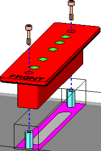
Clean
Clean the pipetting cover surfaces.
Remove each of the four pipetting covers (two screws).
Thoroughly clean the entire cover with water to remove all material deposits.
Scrub the top and bottom surface of each cover.
Clean
Clean the five access holes on each pipetting cover.
Soak an applicator in water.
Scrub each of the access holes with the applicator.
Rinse each cover thoroughly with warm water, and allow the cover to dry.
Clean
Clean the top of the reagent storage module.
Use water to clean the area where the covers were removed.
Confirm that all debris is removed.
Clean the pipettor cover area on instruments without removable pipettor covers.
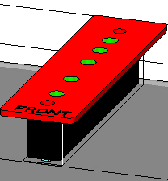
Clean
Clean the four pipetting covers.
Clean the top surface of each cover with water.
Wipe the cover dry.
Clean
Clean the five access holes on each pipetting cover.
Soak an applicator in water.
Scrub each of the access holes with the applicator.
Wipe the surfaces dry.
Clean the underside of the pipetting cover area.
Covers Removed
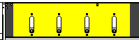
OR
Covers Installed
Clean
Clean the underside of the reagent storage module pipetting cover area.
Use a Scotch-Brite® pad soaked in water to clean the metal surface around the pipettor covers.
Confirm that these areas are clean and free of debris.
Edges of the elongated access holes.
Surface of the screws.
Area highlighted in yellow.
Bottom surface of each cover.
When clean, wipe the surface dry.
Clean the reagent storage pipetting slots.
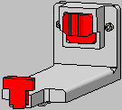
Push and Pull
Push and pull the tensioners on the front and rear pipetting slots, to verify that the tensioners move freely.
Clean
If a tensioner is sticking, then complete the following steps.
Remove the pipetting slot (two screws) that has the sticking tensioner.
Caution: Use caution when removing the pipetting slots from the reagent storage module. Do not lose the springs at the rear of the tensioner.
Disassemble the pipetting slot assembly.
Clean all the parts with water.
Reassemble the pipetting slot assembly and reinstall.
Note: For instruments 602697 and 900568 and higher, an extra adjustment is required. Refer to the
RS: Adjusting Reagent Pipettor Nest procedure.
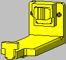
Clean
If a tensioner is not sticking, then complete the following steps.
Do not remove or disassemble the pipetting slots.
Clean the pipetting slots with water.
Push and pull the tensioners, to verify that the tensioners move freely.
Ensure all fallen debris and cleaning materials are removed from storage module and there is no debris on the surface of the packs within the storage module.
Check the gripper for spills or rust.
To remove rust, use a Scotch-Brite® pad and 3-IN ONE® Oil.
To prevent rust, leave a coating of oil on all metal surfaces.
Power off the upper switch on the Power Distribution PCB to remove power to all motors.
Clean and lubricate the following.
Lower Spline Shaft: Clean and lubricate. (Lithium Grease)
Upper Guide Shaft: Clean and lubricate. (3 in 1® Oil)
Input Tray Guide Shafts: Clean and lubricate. (3 in 1® Oil)
Inspect the reagent pack gripper range of motion and cable routing. Move the reagent pack gripper to the home position.
Note: The home position is in the lower left corner of the module when facing the instrument.
Power on the upper switch on the power distribution PCB.
Reinstall the white reagent storage module cover.
Initialize the instrument with
Remap selected.
Perform front section alignments, buffer and waste drawers, and priming maintenance.
Inspect, clean, and repair as necessary: Vacuum pumps and peri-pumps, all tubing, and fittings.
Caution: Ensure that the system is in the ready mode before proceeding to avoid disabling pipettors and failing initialization.
Replace the peristaltic pump tubes one at a time using clamps:
Two bulk fluid transfer pumps:
For the original style transfer pump heads, there is a 34.5 inch piece to use for both pumps (cut to size).
For the Molded Housing Transfer Pump Assembly, there is an 8.75 inch piece for the Wash Buffer Transfer Pump and 8.38 inch piece for the Liquid Waste Transfer Pump. Both are labled.
Five wash tower pumps (DxI 800 instrument)— 7.5-in piece for each pump
Three wash tower pumps (DxI 600 instrument)— 7.5-in piece for each pump
Note: Clamp off the tubing immediately before and just after the peri-pumps to avoid draining the wash buffer and causing the pipettors to fail to wash on priming. Remove the clamps when tubing replacement is complete.
Figure 47: DxI (800 & 600) Fluidics Drawer Components with New Molded Housing Transfer Pump Assembly
Figure 48: New Housing Transfer Pump Assembly
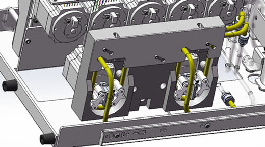
Important: The new Molded Housing Transfer Pump Assembly has a single manifold for both pumps (similar to the wash tower pump manifold) and also uses a metal guard to secure the tubing. Each transfer pump Tubing Manifold comes fully assembled and labeled at both ends. Each tubing manifold will fit only in the correct manifold track.
Figure 49: New Peri-pump Manifold
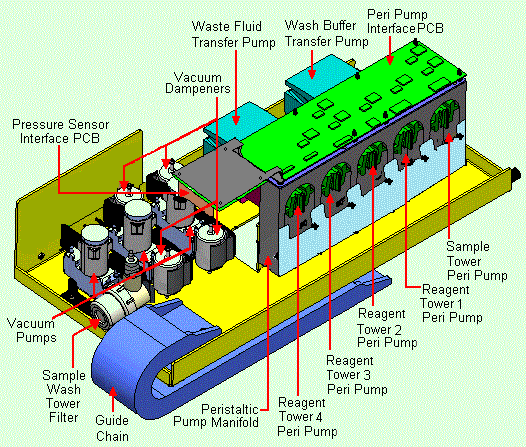
Important: The new manifold no longer has the clear acrylic block. The wash tower tubes and fittings are secured by a guard metal plate. To access tubes and replace the tubes, remove the plate by carefully unscrewing the small button head screws.
Figure 50: Old Peri-pump Manifold
Important: The old manifold has the clear acrylic block that all wash tower tubes and fittings are connected to.
Inspect the newly installed tubing.
Ensure that the wash buffer and liquid waste tubing is routed properly.
Note: For original style, there is no output jaw on the pumps and tubing is drawn in and out of the pumps as the rollers turn. This can cause the tubing to bunch up in the pump on the output edge eventually splitting the tubing and causing a leak. Proper routing of the tubing on the output side of the pumps will reduce the likelihood of split tubing. Route the tubing so that the output side lies flat and there is no bunching or kinking that puts additional back pressure on the tubing forcing it into the pump. Refer to these pictures for proper routing technique.
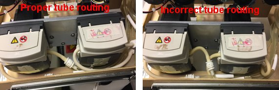
Note: Ensure that the tubing is not installed in reverse (causing fluid to flow in the wrong direction).
Ensure that the wash tower and transfer pump tubing is not twisted in the pump (causing tubing to fail prematurely).
Cycle the vacuum pumps and peri-pumps in
Device Diagnostics to ensure proper operation.
Note: The
Peristaltic and Vacuum Pump screen can be slow to respond to selections. Avoid repeated quick selections.
Select
Diagnostics > Device Diagnostics
> Digital Devices > Peristaltic and Vacuum Pumps.
Select the checkbox
Vacuum On and
Peristaltic On for all pumps.
Allow the pumps to operate for 30 seconds and then remove all the selection from all the checkboxes to turn the pumps off.
Repeat the pump cycling process four to six times to remove air from the circuit and to break in the new peri-pump tubing.
Select
Done.
Caution: The instrument power must be cycled off and on after exiting this diagnostics screen if the following conditions have occurred.
System software version 5.3.1 is installed
Liquid waste drawers are installed and in-use
Liquid waste peristaltic pump was turned on
Note: If all three of the above have occurred, the liquid waste bottles could potentially overfill causing a spill on the floor. This can be prevented by powering off the instrument after exiting the "Peristaltic and Vacuum Pumps" diagnostics screen. Use the user interface "Shut Down Instrument" feature. Exiting and re-launching the AU software will not resolve the issue. Refer to Technical Bulletin SB_IA2018028 for details.
Verify the alignments of the reagent pipettor probes to the carriages, wash towers, and pack locations.
Note: Refer to the
RP: Aligning Reagent Pipettor procedure. Use the procedure for aligning the pipettor to the reagent pack location without removing the cover.
For instruments 602697 and 900568 and higher: If the pipetting slots were removed for cleaning, then align the gripper to pipetting slots.
Select
Done and ignore the N/A voltages displayed.
Keep the Cap/Tube Assemblies facing upward and select
Done.
Observe the voltages displayed are within 2.5 +/- 0.1V.
Select
Cancel to stop the calibration process and exit the screen.
If the downward voltages read different from upward voltages (ex. rear sensor = downward reads 2.54V, upward reads 2.62V) then remove the wash buffer from the sensor tubes by shaking or flicking, blotting or aspirating.
Note: If the downward voltages and upward voltages are the same within 2 decimals points, then there are no wash buffer in the sensor tubes.
Recheck the sensors' voltages in the calibration screen.
Note: Replace the Cap/Tube Assembly/Assemblies if voltages still read outside 2.5 +/- 0.1V after removing the wash buffer from the sensor tube/tubes.
Option 2: Using a meter to verify the sensors' voltages.
Caution: Handle the Wash Buffer Supply Drawer components with care to avoid any damages.
Pull out the Wash Buffer Supply Drawer and locate the Bulk Fluid Tray Interface PCB mounted to the upper rear of the drawer.
Keep the Cap/Tube Assemblies in the wash buffer containers and gently remove the wash buffer containers to the left side of the drawer.
Gently loose the Bulk Fluid Tray Interface PCB cover by removing four screw to gain access to the Bulk Fluid Tray Interface PCB.
Connect the meter to the sensor test points (Ground TP11 or the Ground Strap on the drawer, Front Sensor TP2, and Rear Sensor TP6) on the PCB.
Turn the meter to read DC voltage and remove the sensors from the wash buffer containers.
Check both Pressure Sensors' empty state voltages are within 2.5 +/- 0.1V with the sensor tubes facing downward and the sensor tubes facing upward.
If the downward voltages read different from upward voltages (ex. rear sensor = downward reads 2.54V, upward reads 2.62V) then remove the wash buffer from the sensor tubes by shaking or flicking, blotting or aspirating.
Note: If the downward voltages and upward voltages are the same within 2 decimals points, then there are no wash buffer in the sensor tubes.
Recheck the sensors' voltages.
Note: Replace the Cap/Tube Assemblies or Assembly if voltages still read outside 2.5 +/- 0.1V after removing the wash buffer from the sensor tubes.
Re-calibrate the wash buffer drawer in the user interface.
Complete the PM Checklist and file any PM documents according to procedure.
Record the instrument run hours per test count in Oracle.
Ensure all completed modifications are updated into Oracle.
Remind the customer that, although the tests verify the repairs made, good laboratory practice indicates all levels of QC be run before reporting patient results. Recalibration may be required to correct QC shifts following the PM.
Inspect the inventory of spare aspirate probes at the customer site. Ensure the aspirate probes are clean, and discard any that are bent, worn, or defective (poor spring action). Confirm that the customer has the part number for ordering any needed spares.
Clean the work area and dispose of used parts and materials according to facility guidelines.
Leave a signed copy of the PM Checklist for the instrument maintenance record book.
Review any PM findings and additional actions with the customer, including compliance with all routine maintenance intervals (daily, 5,000 test, 10,000 test).


 Important: The old manifold has the clear acrylic block that all wash tower tubes and fittings are connected to.
Important: The old manifold has the clear acrylic block that all wash tower tubes and fittings are connected to.